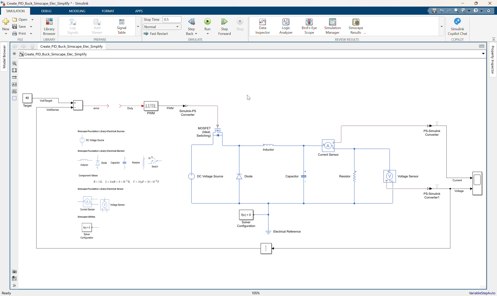
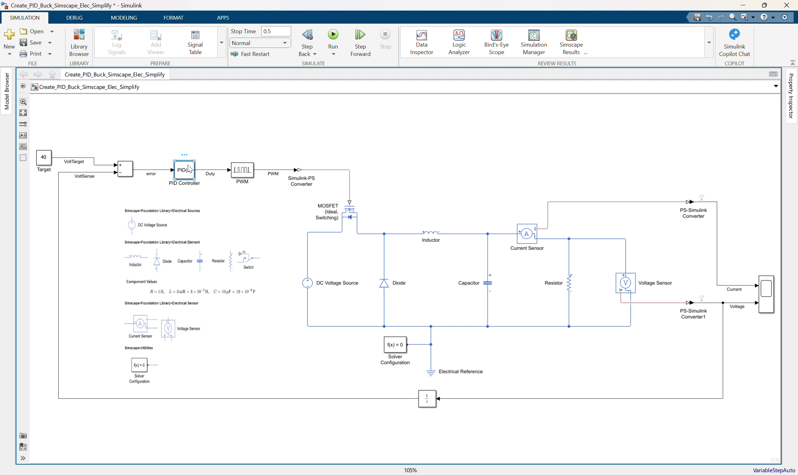
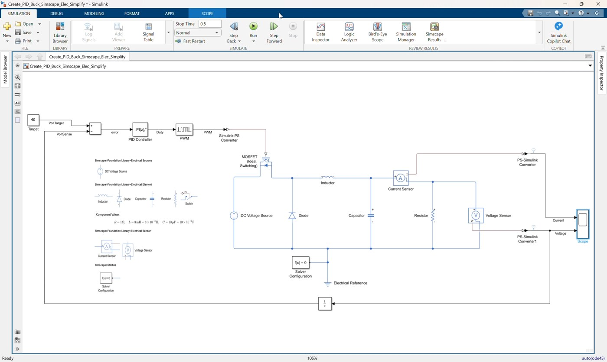
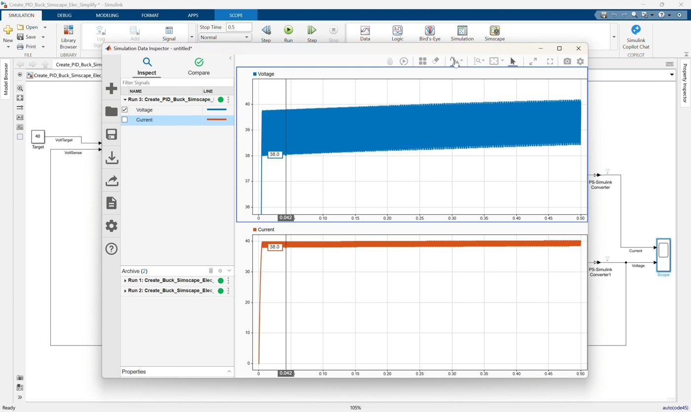
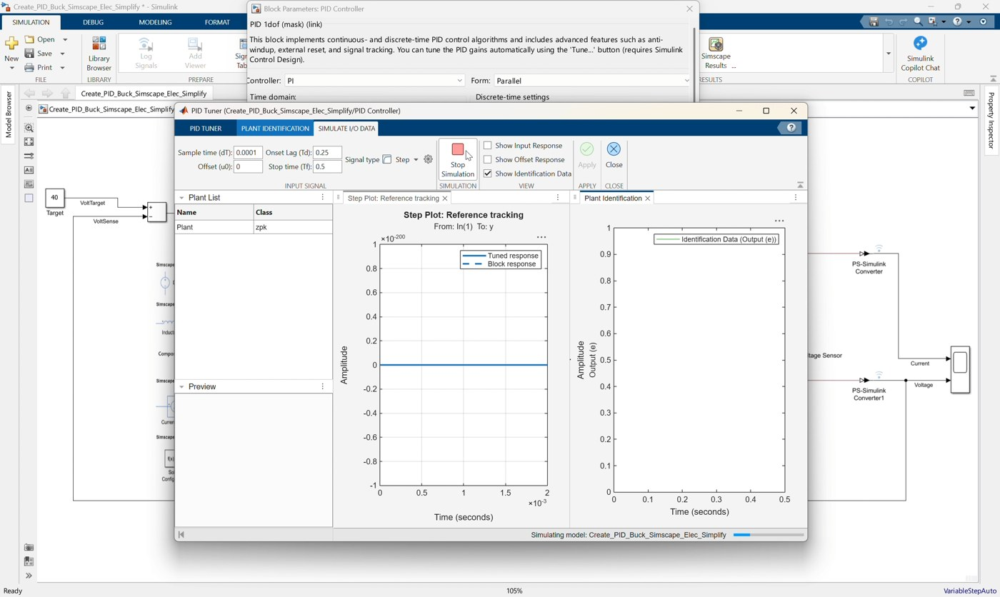
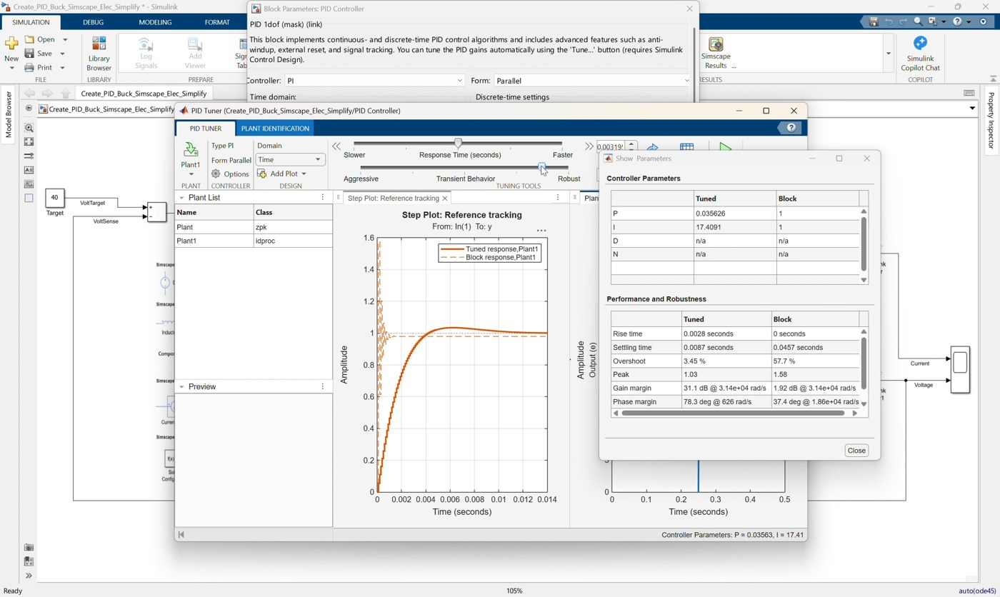
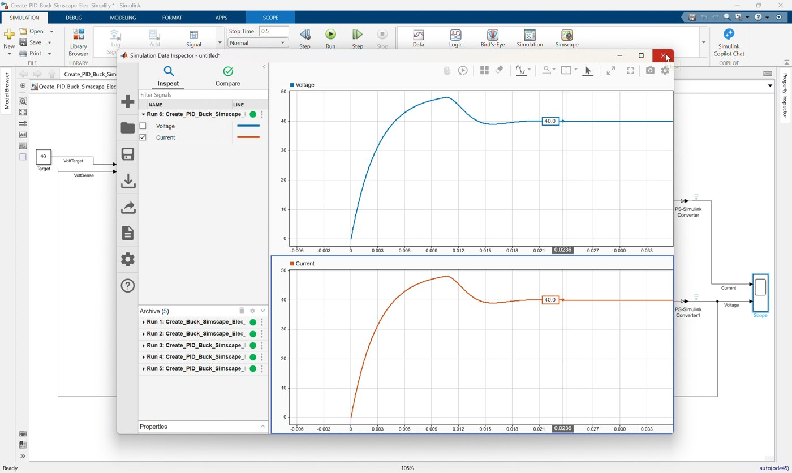

Workshop 03: Add a PI Controller to the Simplified Buck Converter
Goal
Complete a closed-loop voltage controller for the simplified Simscape buck converter. This workshop follows the clip 03_Create_PID_Buck_Simscape_Elec_Simplify.mp4.
Start from:
Create_PID_Buck_Simscape_Elec_Simplify.slxFinish with a model that matches:
Create_PID_Buck_Simscape_Elec_Simplify_finished.slxThe starting model already contains the buck converter plant, output voltage feedback, target voltage, and error calculation. In this clip, participants add the missing PI controller, connect it to the PWM duty input, tune the gains, and validate the closed-loop voltage response.
By the end of this workshop, participants should be able to:
- Explain why fixed-duty open-loop control is not enough for voltage regulation.
- Identify the prepared feedback path in the simplified PID model.
- Add a
PID Controllerblock as a PI controller. - Limit the controller output so PWM duty stays between
0and1. - Connect the error signal to the controller and the controller output to the PWM block.
- Tune and validate the closed-loop buck converter response.
Prerequisites
- MATLAB with Simulink.
- Simscape.
- Simscape Electrical.
- Basic understanding of the simplified buck converter from Workshop 01.
- Basic understanding of feedback control: target, measured output, error, controller, actuator.
Starting Model
Open Create_PID_Buck_Simscape_Elec_Simplify.slx.
The model already includes:
| Existing Block | Purpose |
|---|---|
DC Voltage Source | Provides the input voltage |
MOSFET (Ideal, Switching) | Switching device |
Diode | Freewheeling path |
Inductor, Capacitor, Resistor | Buck converter output stage and load |
Current Sensor | Measures output/load current |
Voltage Sensor | Measures output voltage |
PS-Simulink Converter blocks | Convert physical sensor signals to Simulink signals |
Scope | Displays current and voltage |
Target | Provides the desired output voltage |
Subtract | Calculates voltage error |
Unit Delay | Provides delayed measured-voltage feedback |
PWM | Converts duty command into a PWM signal |
Simulink-PS Converter | Converts PWM into a physical gate signal |
Electrical Reference and Solver Configuration | Required Simscape infrastructure |
The starting model is intentionally incomplete: the PWM input is not driven by a controller yet.
Reference Values
Use these values during the workshop:
| Item | Value |
|---|---|
| DC input voltage | 50 V |
| Output voltage target | 40 V |
| PWM period | 1e-5 s |
| Controller type | PI |
| Controller form | Parallel |
| Controller time domain | Discrete-time |
| Controller sample time | 1e-4 s |
Proportional gain P | 0.0244696968424815 |
Integral gain I | 23.7511768764149 |
Derivative gain D | 0 |
| Output lower saturation | 0 |
| Output upper saturation | 1 |
| Simulation stop time | 0.5 s |
The controller output is the PWM duty command, so it must stay in the valid range:
0 <= Duty <= 1Workshop Procedure
Follow this order in the workshop:
Review prepared model -> Explain feedback loop -> Add PI controller
-> Configure controller -> Connect controller to PWM -> Estimate plant
-> Tune with PID Tuner sliders -> Simulate -> Save completed model1. Open and review the prepared PID model

Video screenshot: prepared simplified buck converter model with target, feedback, and open PWM input.
- Open
Create_PID_Buck_Simscape_Elec_Simplify.slx. - Confirm that the buck converter electrical plant is already complete.
- Confirm the
Targetblock is set to:
40- Confirm the
Voltage Sensoroutput is converted byPS-Simulink Converter1. - Confirm the voltage signal is routed to:
- Scope input 2.
Unit Delay.
- Confirm
Targetand delayed voltage feedback connect toSubtract. - Observe that the
Subtractoutput is the voltage error:
error = Vtarget - Vout- Observe that the
PWMblock input is still open.
2. Explain the closed-loop control path
Explain the intended signal flow:
Target voltage -> Subtract -> PI Controller -> PWM -> MOSFET gate
Measured output voltage -> Unit Delay -> Subtract feedback inputThe controller adjusts duty cycle automatically. If output voltage is below the 40 V target, the error becomes positive and the PI controller increases duty cycle. If output voltage is too high, the controller reduces duty cycle.
3. Add the PID Controller block

Video screenshot: adding the PID Controller block between error and PWM.
- Add a
PID Controllerblock near theSubtractandPWMblocks. - Rename it
PID Controllerif needed. - Place it between the
Subtractoutput and thePWMinput.
The controller block will convert voltage error into duty-cycle command.
4. Configure the PID Controller as PI
- Open the
PID Controllerblock parameters. - Set the controller type to:
PI- Set the form to:
Parallel- Set the time domain to:
Discrete-time- Set the sample time:
1e-45. Enter initial PI settings
Enter simple initial gains so the controller block is valid before tuning:
P = 1
I = 1
D = 0
N = 100These initial values are only a starting point. The final gains will be calculated with PID Tuner after estimating a plant from the Simscape model.
6. Enable controller output saturation
- In the
PID Controllerblock, enable output saturation. - Set the saturation limits:
Lower saturation limit = 0
Upper saturation limit = 1- Keep anti-windup mode as:
noneThe saturation limits are required because the PWM duty command cannot be less than 0 or greater than 1.
7. Connect the controller

Video screenshot: PI controller output connected to the PWM duty input.
- Connect the
Subtractoutput to thePID Controllerinput. - Name this signal:
error- Connect the
PID Controlleroutput to thePWMinput. - Name this signal:
Duty- Confirm the existing path remains connected:
PWM -> Simulink-PS Converter -> MOSFET gate8. Check the Scope signals

Video screenshot: checking current and voltage signals before tuning.
- Confirm Scope input 1 receives output current.
- Confirm Scope input 2 receives output voltage.
- Confirm the voltage signal is also used for feedback through the
Unit Delay.
Suggested Scope signal order:
Scope input 1: Output current
Scope input 2: Output voltage9. Open PID Tuner and estimate a plant

Video screenshot: PID Tuner estimating a plant by simulating and linearizing the Simscape model.
- Open the
PID Controllerblock. - Click
Tune. - In PID Tuner, use the plant estimation or plant linearization workflow.
- Choose to estimate a new plant by linearizing the Simulink model.
- Use the prepared closed-loop model signals:
Plant input: duty command entering the PWM block
Plant output: measured output voltage from PS-Simulink Converter1- Linearize the model at an operating point near the nominal converter condition:
Target voltage = 40 V
Nominal duty region = around 0.8- Create or update the plant model in PID Tuner.
The buck converter is a nonlinear switching Simscape model. PID Tuner needs a linear plant approximation, so this step estimates a local linear plant around the selected operating point.
10. Tune the PI response with PID Tuner

Video screenshot: tuning the PI response using the PID Tuner response and transient-behavior controls.
- Keep the controller type as
PI. - Use the PID Tuner response sliders to adjust the controller:
- Move the response-time slider to make the response faster or slower.
- Move the transient-behavior slider to make the response more aggressive or more robust.
- Watch the reference-tracking plot while adjusting the sliders.
- Aim for:
- Stable response.
- Output voltage tracking near
40 V. - Reasonable rise and settling behavior.
- No excessive oscillation.
- Duty command remaining within the valid
0to1range.
- Apply the tuned controller back to the Simulink model.
The finished model uses these tuned PI gains:
P = 0.0244696968424815
I = 23.7511768764149
D = 0
N = 100The exact values can vary slightly depending on the operating point and slider positions, but the final model should use the tuned PI controller from PID Tuner.
11. Configure, simulate, and save the model

Video screenshot: final simulation response after applying the tuned PI controller.
- Set the simulation stop time to:
0.5- Run the model.
- Open the Scope.
- Confirm the output voltage moves toward the
40 Vtarget. - Confirm the current response is reasonable and the simulation completes without duty-cycle errors.
- Save the completed model.
- Open the provided finished model if you want to compare:
Create_PID_Buck_Simscape_Elec_Simplify_finished.slx- Confirm the completed model has this control path:
Target -> Subtract -> PID Controller -> PWM
Voltage Sensor -> PS-Simulink Converter1 -> Unit Delay -> SubtractControl Discussion
Use the result to explain the control improvement:
- Open-loop fixed duty uses a constant duty command and cannot correct tracking error.
- Closed-loop PI control uses measured output voltage feedback.
- The PI controller adjusts duty to reduce the error between
Targetand measured output voltage. - Saturation keeps the requested duty command physically valid for the PWM block.
- PID Tuner does not directly tune the nonlinear switching waveform. It first uses a linearized plant model around the operating point, then tunes the PI controller against that estimated plant.
Suggested Instructor Flow
- Start by explaining that the plant and feedback signal are already prepared.
- Point out the open
PWMinput and the preparedSubtracterror signal. - Explain
error = Vtarget - Vout. - Add the
PID Controllerblock betweenSubtractandPWM. - Configure the controller as a discrete-time PI controller.
- Enter simple initial gains, then enable saturation from
0to1. - Open PID Tuner from the controller block.
- Estimate a new plant by linearizing the Simscape model at the operating point.
- Tune the PI response using the PID Tuner sliders.
- Apply the tuned gains back to the model.
- Run the model and compare the voltage response against the
40 Vtarget. - Close by explaining that this is the first closed-loop voltage regulator in the workshop sequence.
Participant Exercise
Ask participants to try these controller cases:
| Case | Controller Setup | Expected Result |
|---|---|---|
| No controller | PWM input not driven | Model cannot regulate the converter |
| Initial PI | P = 1, I = 1 before tuning | Basic closed-loop behavior, not final |
| PID Tuner PI | Tuned from estimated plant | Tracks near the 40 V target |
For each valid case, record:
- Final output voltage.
- Settling behavior.
- Whether the response is slow, oscillatory, or well damped.
Troubleshooting
| Symptom | Likely Cause | Fix |
|---|---|---|
| PWM input is still open | PID output was not connected | Connect PID Controller output to PWM input |
| Output voltage moves away from target | Feedback sign is wrong | Use Target on the positive Sum input and measured voltage on the negative input |
| Duty command is invalid | PID output saturation is disabled | Enable saturation and set limits to 0 and 1 |
| Output response is too slow | PI gains are too small | Increase gains or use the reference tuned gains |
| Output oscillates | PI gains are too aggressive | Reduce gains or retune the controller |
| Scope does not show voltage | Voltage sensor converter is disconnected | Check Voltage Sensor -> PS-Simulink Converter1 -> Scope input 2 |
| PID Tuner cannot tune directly | The Simscape buck converter is nonlinear and switching | Estimate a new plant by linearizing the model at an operating point |
| Tuned response does not look right | Operating point or slider settings are not suitable | Re-estimate the plant near the nominal operating point and adjust response/transient sliders |
Reference Model Check
The completed model should follow this signal structure:
Target 40 V -> Subtract positive input
Voltage Sensor -> PS-Simulink Converter1 -> Unit Delay -> Subtract negative input
Subtract -> PID Controller -> PWM
PWM -> Simulink-PS Converter -> MOSFET gate
Current Sensor -> PS-Simulink Converter -> Scope input 1
Voltage Sensor -> PS-Simulink Converter1 -> Scope input 2Reference controller settings:
Controller = PI
Form = Parallel
Time domain = Discrete-time
Sample time = 1e-4
P = 0.0244696968424815
I = 23.7511768764149
D = 0
Output saturation = on
Lower saturation limit = 0
Upper saturation limit = 1
Simulation stop time = 0.5